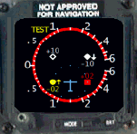
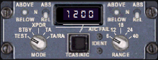
gauge14=B767Wvsi, 556, 406, 136with
//gauge14=B767Wvsi, 556, 406, 136Please note the final comma. It is useful to add this here so that you can later add gauge parameters. Such parameters will be described below in the Gauge Options section.
gauge14=ILH_TCAS!IVSI, 545, 391, 158, 158,
gauge30=ILH_TCAS!Logic, 0, 0, 1, 1,
gauge06=B767Wxpdr, 205, 586with
//gauge06=B767Wxpdr, 205, 586
gauge06=ILH_TCAS!Transponder, 204, 586, 228, 89,
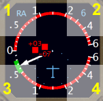
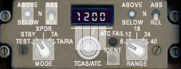
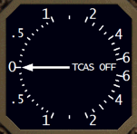
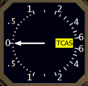
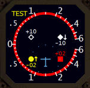
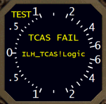
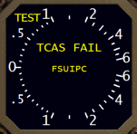
or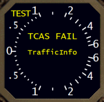
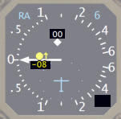
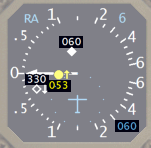
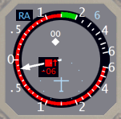
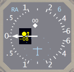
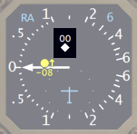
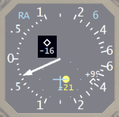
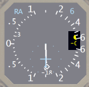
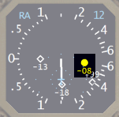
| altitude |
RA
Thresholds |
|||
| ZT |
TAU |
DMOD |
AL |
|
| <
2200
radio |
600ft |
15sec |
0.20nm |
300ft |
| 2200-5000 |
600ft |
15sec |
0.20nm |
300ft |
| 5000-10000 |
600ft |
20sec |
0.35nm |
350ft |
| 10000-20000 |
600ft |
25sec |
0.55nm |
400ft |
| 20000-42000 |
700ft |
30sec |
0.85nm |
600ft |
| >
42000 |
800ft |
35sec |
1.10nm |
700ft |
altitude |
TA Thresholds | ||
| ZT |
TAU |
DMOD |
|
| <
2200
radio |
850ft |
20sec |
0.30nm |
| 2200-5000 |
850ft |
25sec |
0.33nm |
| 5000-10000 |
850ft |
30sec |
0.48nm |
| 10000-20000 |
850ft |
40sec |
0.75nm |
| 20000-42000 |
850ft |
45sec |
1.00nm |
| >
42000 |
1200ft |
48sec |
1.30nm |
| parameter |
default |
description |
| trafficinfo:yes|no |
no |
Whether to use TrafficInfo for
traffic. Otherwise, traffic is obtained from FSUIPC. |
| volume:N |
-300 |
Set the volume of TCAS
alerts. 0 and -100 are louder, and -500 is softer. |
| parameter |
default |
description |
| blueplane:yes|no |
yes |
Whether own aircraft should be
blue. If it is blue, then other and proximate traffic will be
white. |
| other:N |
999 |
Vertical range in hundreds of
feet for displaying other traffic. With the default value, all
other traffic will be displayed, although if using a relative altitude
display the values will be clipped at +/- 99. A more realistic value is 45 or 27. |
| fontscale:N |
1.0 |
Scale factor for TCAS altitude
font. Depending on your display and eyesight, you can adjust this
(e.g., 0.9 or 1.1). |
| pic:yes|no |
yes |
Whether to try and access 767PIC
internal values for panel lighting state, IRU state, and power
state. Leaving this on outside of 767PIC is probably not a
problem. |
| parameter |
default |
description |
| pic:yes|no | yes | Whether to try and access 767PIC internal values for panel lighting state, IRU state, and power state. Leaving this on outside of 767PIC is probably not a problem. |
gaugeXX=ILH_TCAS!Logic, 0, 0, 1, 1, trafficinfo:yes volume:-200
gaugeYY=ILH_TCAS!IVSI, 545, 391, 158, 158, fontscale:1.1 other:45
| [Filtering] |
|
| Range=100 |
Range [feet] below which
intruders are filtered. Default 100. |
| Altitude=100 |
Altitude [feet] relative to
ground altitude below own aircraft below which intruders are considered
on the ground. Default 100. |
| Speed=30 |
Groundspeed [kts] below which
intruders are considered on the ground. Default 30. |
| [Smoothing] |
|
| Enabled=1 |
Enabled (=1) or disabled
(=0). Default 1. This must be enabled for groundspeed-based
filtering above to be in effect. |
| MaxCoast=20 |
Maximum seconds of no position
update before an intruder's track is discarded. The default of 20
seems to work OK with the sometimes infrequent position updates seen
with Squawkbox 2 plus SBRelay and/or AIBridge. |
| Alpha=0.4 |
Smoothing parameter.
Useful values are between 0.4 and 1.0, with 1.0 meaning no smoothing. |